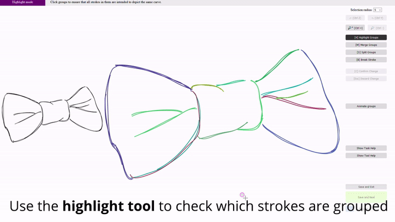
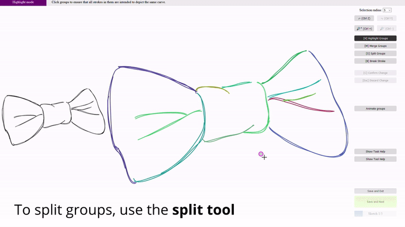
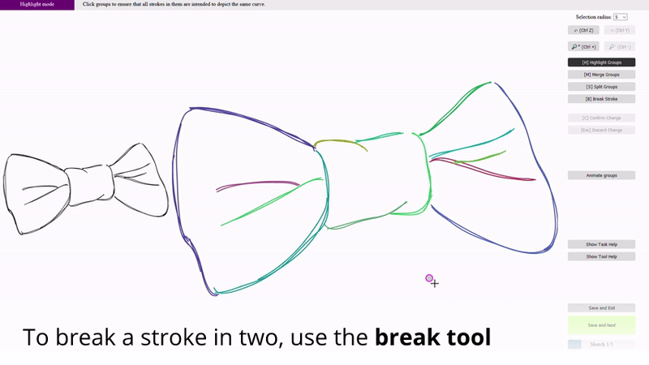

You will be shown sketches containing overdrawn strokes. Some of these overdrawn strokes can be grouped together to depict the same clean curve (see the example below). For each sketch, take your time to observe and mentally group the strokes. When ready, you will see a grouping of the same sketch indicated by different colors. Your task is to modify this grouping to match the grouping constructed in your mind.
Once finished a drawing, you can click the button at the bottom of the right sidebar labelled "Save and Next." This will download one file per drawing. Your browser may ask for permission to download. Make sure to accept this.
If you want to stop the entire session before finishing, you can click "Save and Exit." This will skip all the remaining drawings.
To make sure your groups are correct, click "Animate Groups" to highlight groups one by one. You can also use the merge tool to select a group to highlight everything in that group.

To merge groups, use the merge tool by clicking "Merge Groups." Click on a group to select it. Then, click on other groups to toggle whether or not to merge them into the first group. Clicking "Confirm Change" will apply the merge. clicking "Discard Change" or clicking a blank area will deselect everything.
To split strokes out of a group, use the split tool by clicking "Split Groups." Click on a group to select it. Then, click on strokes in the group to toggle whether or not you would like to separate them. Clicking "Confirm Change" will apply the split. clicking "Discard Change" or clicking a blank area will deselect everything.

To break a stroke into two strokes that can be grouped separately, use the break tool by clicking "Break Stroke." Click on a stroke to select it. Then, click along the stroke to place the point where a cut will be made. Clicking "Confirm Change" will turn it into two strokes. clicking "Discard Change" or clicking a blank area will deselect everything.

At any time, use the undo/redo buttons to step through your edit history.
You may also want to use the selection radius dropdown menu and the zoom in/out buttons to make more careful edits.
Thanks for your help!
Please send your downloaded grouping files to chenxil@cs.ubc.ca.